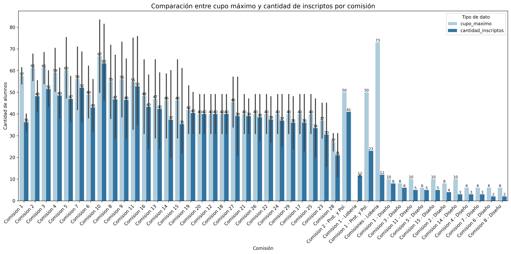

Dashboard de Estadísticas Académicas
Visualización de datos de inscriptos, rendimiento y cupos
Tasa de aprobación por comisión
Cupo vs. Inscriptos por comisión

Abandonos por materia
Ranking de materias por tasa de promoción